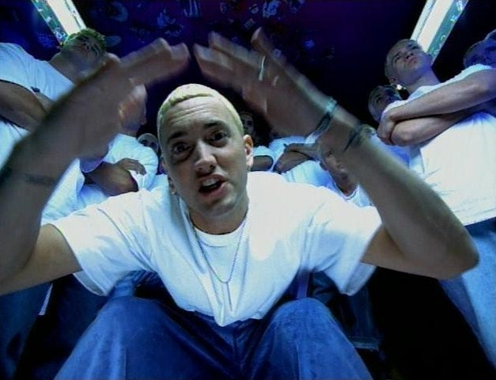

The Slim Shady LP (1999).
The Real Slim Shady, Music Video (2000).
Grammy Awards (2015).
Eminem, originally Marshall Bruce Mathers III, born october 17th 1972 in St. Joseph, Missouri, U.S. He is an American rapper, songwriter, and producer widely known as one of the greatest and most influential rappers of all time.
He was raised by his singel mother in Detroit and faced a lot of callenges growing up such as bullying and poverty. After repeating the 9th grade three times he dropped out of high school at the age of 17. Despite that, he found Comfort in storytelling anf rap Music which became is escape during these difficult circumstances.
Emerging from Detroits underground rap scene in the mid 1990s, he gained fame with his raw, confessional lyrics and rapid-fire flow. His breakthrough album, The Slim Shady LP (1999), introduced his alter ego "Slim Shady" and brought him both critical acclaim and controversy for its dark humor and edgy content.
Known for albums like The Marshall Mathers LP and Recovery, Eminem has broken sales records and won numerous awards, including Grammy and Academy Awards. His complex rhyme schemes, storytelling abilities, and willingness to tackle personal struggles and social issues have cemented his legacy in music.